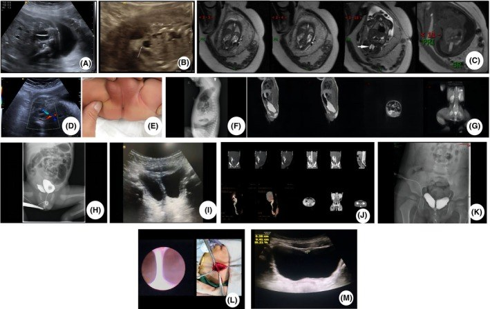
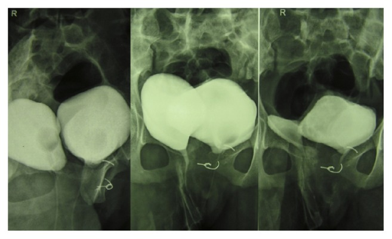
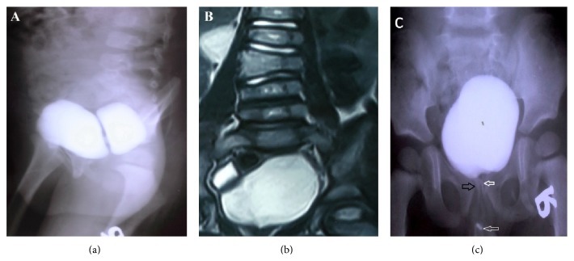
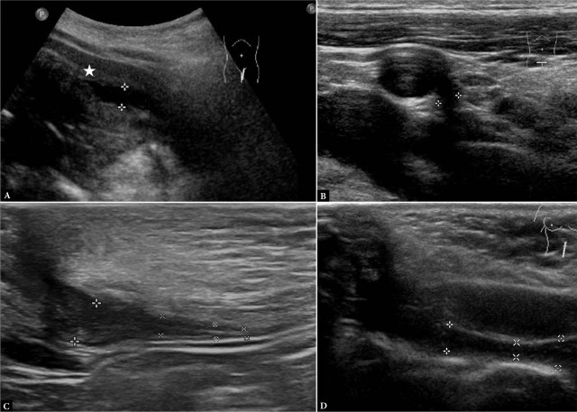
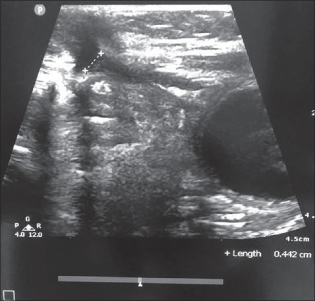

1719 — Bàng quang đôi, vách bàng quang và nang niệu rốn ở trẻ (bladder duplication, vesical septum & urachal cyst)
Tags: pattern:bang-quang-doi pattern:bach-trong-long-bang-quang pattern:khoi-nang-duong-giua pattern:ro-ron pattern:u-nuoc-than pattern:di-tat-cot-song vung:bang-quang vung:ron-bung vung:khung-chau protocol:VCUG protocol:SA-bung protocol:MRI-bang-quang protocol:CT-nieu-do incidentaloma:khong
Mức chắc chắn (certainty): tổng hợp y văn (literature synthesis) — 1 ca nguyên văn có ảnh siêu âm thai + MRI thai + CT niệu đồ (PMC10980783), 1 ca bàng quang đôi hoàn toàn có VCUG + MRI niệu (PMC4745289), 1 ca bàng quang đôi mặt phẳng vành + MRI cột sống (PMC4465739), 1 ca bàng quang đôi không hoàn toàn có IVU + MRI (PMC4310127), 1 loạt 15 trẻ đối chiếu siêu âm với mô bệnh niệu rốn (PMC12777947), 1 loạt 49 nhũ nhi nang niệu rốn nhiễm (PMC13462251), cùng 3 ca/bài về niệu rốn có ảnh (PMC11968037; PMC10064585; PMC11180779). Chỗ suy luận được ghi rõ.
Câu chốt: Hai bệnh cảnh trong một bài vì cùng một trục: đường giữa dưới rốn. Ba con số quyết định cách đọc: (1) bàng quang đôi KHÔNG phải "hai cái bóng hai bên" — cái chốt là vách trong lòng bàng quang (septum) trên VCUG, còn "bàng quang Mickey Mouse" của bài 1706 là HAI TÚI THỪA NGOÀI THÀNH (hai "tai" nằm ngoài bàng quang) → đọc nhầm là cắt nhầm túi thừa; (2) bàng quang đôi hoàn toàn đi kèm dị tật sinh dục ngoài 90%, dị tật tiêu hóa dưới tới 42%, dị tật cột sống 15% → luôn phải chụp cột sống và khám sinh dục; (3) siêu âm phân loại niệu rốn chỉ khớp mô bệnh 70% (κ 0,66) nên loại niệu rốn quyết định có mổ hay theo dõi, và nang niệu rốn nhiễm ở nhũ nhi tự khỏi 79,6% — mổ ngay trong giai đoạn viêm là sai lầm (PMC12777947; PMC4310127; PMC13462251).
1. Tổng quan bệnh học – cơ chế hình ảnh (TẠI SAO)
1.1 Bàng quang đôi — phôi thai và phân loại
- Phôi thai: bàng quang hình thành từ xoang niệu sinh dục (urogenital sinus); bàng quang đôi là hậu quả của một vách trung mô chia đôi ống niệu–sinh dục ở giai đoạn rất sớm. Vì thế tổn thương không đơn thuần là "niệu": vách phôi này cùng lúc có thể chia trực tràng, âm đạo, tử cung, cột sống → "hội chứng nhân đôi đuôi (caudal duplication syndrome)".
- Phân loại Abrahamson (kinh điển, vẫn dùng):
- Hoàn toàn (complete): hai bàng quang riêng biệt, mỗi bên một niệu đạo riêng; có thể kèm hai tử cung/hai âm đạo hoặc dương vật đôi.
- Không hoàn toàn (incomplete): hai khoang thông nhau, một niệu đạo chung — thường không cần mổ nếu cả hai nửa dẫn lưu tốt.
- Mặt phẳng (plane): dọc (sagittal) = hai bàng quang cạnh nhau, phổ biến hơn 2,5 : 1; vành (coronal) = trước–sau, thường đi kèm tật lỗ tiểu trên (epispadias)/phức hợp lỗ tiểu trên – lộ bàng quang và dãn khớp mu.
- Hình ảnh vì sao vậy: nước tiểu là dịch 0–10 HU, T1 tối – T2 rất sáng; vách giữa là cấu trúc mô mềm thật (không phải dịch) → trên VCUG là khuyết đầy (filling defect) chia bóng cản quang thành hai nửa; trên siêu âm là dải echo giữa hai khoang trống âm; trên MRI là dải tín hiệu trung gian giữa hai túi nước tiểu T2 sáng. Chẩn đoán nằm ở vách + hai lỗ niệu đạo + quan hệ với niệu quản, không ở "số lượng bóng".
- Đi kèm (bắt buộc nhớ): trong 40 ca bàng quang đôi hoàn toàn: 90% có nhân đôi cơ quan sinh dục ngoài, tới 42% có nhân đôi ruột dưới, 15% có spina bifida/meningocele/myelomeningocele (PMC4310127 dẫn Kossow & Morales).
- Vì sao phải đọc cả khung chậu: dãn khớp mu (pubic diastasis) và giảm sản xương cùng là dấu có sẵn trên phim giúp phân biệt bàng quang đôi thật với túi thừa hai bên — ca 14 tuổi trong bài có dãn khớp mu + giảm sản xương cùng (PMC4745289).
1.2 Niệu rốn (urachus) — 4 thể và TẠI SAO thành nang
- Phôi thai: niệu rốn nối đỉnh bàng quang với rốn; bình thường xơ hoá thành dây rốn giữa (median umbilical ligament). Khi tồn tại từng đoạn → 4 thể (định nghĩa theo hình 1 của PMC12777947):
- Túi niệu rốn (urachal diverticulum): đoạn phía dưới (sát bàng quang) không xơ → đỉnh bàng quang lồi lên thành túi.
- Nang niệu rốn (urachal cyst): hai đầu xơ, đoạn giữa còn → nang kín ở đường giữa.
- Xoang niệu rốn (urachal sinus): đoạn phía rốn không xơ → ngách hở ra rốn, chảy dịch.
- Niệu rốn tồn tại (patent urachus): toàn bộ ống còn → nước tiểu chảy ra rốn.
- Tần suất: nang niệu rốn ~1/5.000 trẻ sinh sống (PMC10064585); trong các loạt niệu rốn có triệu chứng, nang chiếm 52–75%, xoang ~46% (các loạt khác nhau, PMC12777947).
- TẠI SAO nang "đặc/giả đặc" khi nhiễm: biểu mô niệu rốn tiết nhầy + bong tế bào → dịch đặc, có echo bên trong, không hoàn toàn trống âm. Khi nhiễm, thành nang dày, ngấm thuốc, mô mỡ quanh tăng đậm độ → trên CT giả u/áp-xe, dễ nhầm với áp-xe ruột thừa hoặc khối u. Trên MRI, dịch đặc T1 có thể không tối hoàn toàn — đây là lý do một mình tín hiệu T1 không loại trừ nang nhiễm.
- Vì sao phải theo dõi/loại bỏ: niệu rốn tồn tại là nơi phát sinh ung thư biểu mô tuyến niệu rốn ở người lớn (hiếm nhưng tiên lượng xấu) — lý do kinh điển để cắt nang có triệu chứng/tái phát, nhưng không cắt mọi niệu rốn không triệu chứng ở trẻ.
- Số liệu điều trị (quan trọng cho quyết định): 49 nhũ nhi ≤ 12 tháng nang niệu rốn nhiễm lần đầu, điều trị bảo tồn (kháng sinh ± dẫn lưu qua da): khỏi hoàn toàn 79,6% (39/49), thoái triển ≥ 50% 8,2%, phải mổ 12,2% (6/49); biểu hiện rốn 79,6%, tạo áp-xe 75,5% (PMC13462251).
1.3 Ngưỡng định lượng cần nhớ
| Chỉ số | Số liệu | Nguồn |
|---|---|---|
| Tỉ lệ mặt phẳng bàng quang đôi | dọc : vành = 2,5 : 1 | PMC4310127 |
| Dị tật đi kèm (bàng quang đôi hoàn toàn, n = 40) | sinh dục ngoài 90% · tiêu hóa dưới ≤ 42% · cột sống 15% | PMC4310127 (dẫn Kossow & Morales) |
| Nang niệu rốn | ~1/5.000 trẻ sinh sống | PMC10064585 |
| Phân bố thể niệu rốn | nang 52–75% · xoang ~46% (các loạt khác nhau) | PMC12777947 |
| Siêu âm vs mô bệnh (niệu rốn) | khớp 70%, κ 0,66 (KTC 0,3–1), n = 15, tuổi trung vị 0,2 tuổi | PMC12777947 |
| Nang niệu rốn nhiễm ở nhũ nhi (n = 49) | khỏi hoàn toàn 79,6% · thoái triển 8,2% · mổ 12,2%; áp-xe 75,5% | PMC13462251 |
| Chẩn đoán trước sinh | 27,5 tuần đã thấy vách bàng quang + thận đa nang; MRI thai xác nhận bàng quang đôi | PMC10980783 |
| Tuổi biểu hiện bàng quang đôi hoàn toàn | 14 tuổi (đái rỉ từ nhỏ) — chẩn đoán muộn là quy luật | PMC4745289 |
| Tuổi biểu hiện thể vành | 6 tuổi (tiểu hai dòng) + dương vật đôi | PMC4465739 |
2. Mẫu hình + chẩn đoán phân biệt theo vị trí (gamut)
- Mẫu hình A — VÁCH trong lòng bàng quang, hai khoang đều chứa nước tiểu: bàng quang đôi (hoàn toàn nếu hai niệu đạo, không hoàn toàn nếu một niệu đạo); phân biệt túi thừa Hutch hai bên ("Mickey Mouse") — túi ngoài thành, không có vách chia lòng; bàng quang thần kinh/trabeculation — nhiều giả túi nhỏ, không vách; vách do bóng catheter/bóng đổ đầy.
- Mẫu hình B — khối nang đường giữa DƯỚI RỐN ở trẻ: nang niệu rốn; phân biệt nang ống niệu–rốn (omphalomesenteric/Meckel) — thường lệch phải, nối ruột, nang buồng trứng (bé gái), nang mạc treo, áp-xe thành bụng, u máu rốn.
- Mẫu hình C — chảy DỊCH/NƯỚC TIỂU ra rốn: niệu rốn tồn tại (nước tiểu, liên tục) · xoang niệu rốn (dịch nhầy, ngắt quãng) · u hạt rốn (umbilical granuloma) (mô đỏ, không có ống) · ống niệu–rốn tồn tại (dịch phân, hôi).
- Mẫu hình D — TIỂU HAI DÒNG/hai lỗ niệu đạo: bàng quang đôi hoàn toàn · niệu đạo đôi (một bàng quang) · lỗ tiểu trên (epispadias) · rò niệu đạo–trực tràng.
- Mẫu hình E — hai bàng quang + BẤT THƯỜNG CỘT SỐNG: hội chứng nhân đôi đuôi; phân biệt bàng quang đôi đơn thuần (không có dị tật ruột/sinh dục), thoát vị tủy–màng tủy, dính tủy (tethered cord) — đều phải MRI cột sống trước mổ.
- Gợi nhớ: vách ở TRONG = đôi thật; tai ở NGOÀI = Hutch; nang ở GIỮA, dưới rốn, không liên quan ruột = niệu rốn.
3. Bảng so sánh phân biệt (ma trận đối chiếu)
| Thực thể (entity) | Hình ảnh điển hình (US/VCUG/CT/MRI) | Chốt vào (rule-in) | Chốt loại (rule-out) | Gợi ý xác nhận |
|---|---|---|---|---|
| Bàng quang đôi hoàn toàn | Hai bàng quang riêng, hai niệu đạo; VCUG: hai bóng, hai ống dẫn thuốc; thường dãn khớp mu, giảm sản xương cùng | Hai niệu đạo đổ riêng vào từng bàng quang + vách mô mềm giữa hai lòng | Một niệu đạo chung + hai khoang thông nhau → không hoàn toàn, không phải thể này | VCUG có thì đi tiểu + đặt catheter cả hai lỗ; MRI/CT niệu đồ trước mổ |
| Bàng quang đôi không hoàn toàn | Vách chia lòng, hai khoang thông nhau, một niệu đạo; có thể chỉ thấy khuyết đầy khi bơm cản quang | Vách + thông thương + một niệu đạo; hai nửa dẫn lưu tốt | Hai niệu đạo riêng, hai bóng tách biệt → thể hoàn toàn | VCUG (thì làm đầy + đi tiểu); siêu âm sau đi tiểu |
| Túi thừa Hutch hai bên ("Mickey Mouse") | Hai túi NGOÀI thành cạnh lỗ niệu quản, to lên khi đi tiểu; không có vách trong lòng | Cổ túi thấy được, cản quang vào túi ở thì voiding; VUR cùng bên | Vách chia lòng bàng quang trung tâm → bàng quang đôi | VCUG thì voiding; nội soi (bài 1706) |
| Nang niệu rốn | Khối đường giữa dưới rốn, không thông bàng quang/rốn; thành mỏng khi chưa nhiễm, dày + ngấm thuốc khi nhiễm | Nang kín ở đường giữa, hai đầu xơ, không thấy ống nối rốn–bàng quang | Ống thông suốt rốn–bàng quang (nước tiểu ra rốn) → niệu rốn tồn tại | Siêu âm đầu dò thẳng tần số cao; CT/MRI khi nhiễm; mô bệnh |
| Niệu rốn tồn tại | Ống echo thấp chạy từ đỉnh bàng quang tới rốn; nước tiểu ra rốn; trên VCUG cản quang đi lên rốn | Thấy ống liên tục bàng quang–rốn (đo được đường kính, mm) | Nang kín, không có ống → không phải thể này | Siêu âm + VCUG (bơm qua rốn hoặc qua bàng quang) |
| Xoang niệu rốn | Ngách hở ra rốn, không thông bàng quang; hay chảy dịch nhầy tái phát | Ngách từ rốn đi xuống, cụt, không tới bàng quang | Ống tới bàng quang → niệu rốn tồn tại | Siêu âm + chụp lỗ rốn (fistulogram) |

Panel A–D: siêu âm thai 27,5 tuần thấy vách bất thường trong bàng quang thai (A, B) và MRI thai xác nhận bàng quang đôi (C); lặp lại 31 tuần vẫn thấy vách (D). Các panel còn lại (E–M): hậu môn không lỗ, VCUG với khuyết đầy chia bàng quang thành hai nửa (H), CT niệu đồ 3 tuổi: thiểu sản thận trái + thận phải có niệu quản đôi + bàng quang đôi không hoàn toàn (J). Nguồn: Clin Case Rep 2024 (PMC10980783), Fig. 1, CC BY 4.0.4. Protocol chụp + hệ phân tầng chẩn đoán
- Siêu âm bụng–bàng quang (đầu tay, không bức xạ): khảo sát bàng quang đầy và sau đi tiểu; tìm vách echo giữa hai khoang, đo kích thước, xem ứ nước thận, dị tật sinh dục (tử cung đôi, âm đạo vách). Với khối rốn: đầu dò thẳng tần số cao (7–12 MHz), đo chiều dài/đường kính ống (mm) và tìm chỗ nối bàng quang/rốn.
- VCUG (chuẩn vàng cho bàng quang đôi): đặt catheter (và đặt cả hai lỗ nếu nghi hoàn toàn), bơm cản quang, chụp AP + chếch + nghiêng, bắt buộc ảnh đang đi tiểu và sau đi tiểu; ghi số niệu đạo, vách, VUR và hình thái niệu đạo sau; đọc thêm khớp mu và xương cùng trên phim.
- MRI/CT niệu đồ (trước mổ): xác định quan hệ niệu quản – vách – cơ quan sinh dục – trực tràng, phát hiện thận niệu quản đôi, thận lạc chỗ/hình móng ngựa, và dị tật cột sống. Không cần cản quang lặp lại nếu VCUG đã rõ — mục tiêu là bản đồ mổ.
- Đánh giá chức năng thận: siêu âm + DMSA khi có ứ nước/thận nghi giảm chức năng (ca thể vành có thận hình móng ngựa, chức năng phải 60% – trái 40%, PMC4465739).
- Cột sống: siêu âm tủy ở trẻ < 3–6 tháng (cửa sổ còn mở), MRI cột sống khi nghi dính tủy/dị tật; 15% bàng quang đôi hoàn toàn có dị tật cột sống → đừng bỏ qua.
- Niệu rốn: siêu âm là đủ khi thể đơn giản, không nhiễm; CT/MRI khi nhiễm, tái phát, hoặc nghi u. Theo dõi bảo tồn hợp lý ở nhũ nhi nang nhiễm lần đầu (khỏi 79,6%), dẫn lưu qua da khi áp-xe; cắt nang khi tái phát, rò kéo dài, hoặc sau 12 tháng không thoái triển.
flowchart TD
A[Khối nang đường giữa dưới rốn / chảy dịch rốn] --> B[Siêu âm đầu dò thẳng tần số cao]
B --> C{Có ống nối bàng quang - rốn?}
C -->|Có, nước tiểu ra rốn| D[Niệu rốn tồn tại - đo đường kính, cân nhắc cắt]
C -->|Không, nang kín| E{Nhiễm?}
E -->|Có| F[Kháng sinh +/- dẫn lưu qua da, theo dõi 79,6% khỏi]
E -->|Không| G[Theo dõi siêu âm; cắt nếu tái phát hoặc > 12 tháng không thoái triển]
F --> H{Thoái triển?}
H -->|Không| I[Cắt nang + mô bệnh]
H -->|Có| G
J[Trẻ đái rỉ / tiểu hai dòng / nhiễm tiểu tái diễn] --> K[Siêu âm bàng quang đầy + sau đi tiểu]
K --> L{Vách trong lòng bàng quang?}
L -->|Có| M[VCUG: đặt catheter cả hai lỗ, chụp thì voiding]
L -->|Không| N[Nghĩ Hutch - hai túi ngoài thành, bài 1706]
M --> O{Số niệu đạo}
O -->|Hai| P[Bàng quang đôi hoàn toàn: MRI/CT niệu đồ + MRI cột sống + khám sinh dục]
O -->|Một| Q[Bàng quang đôi không hoàn toàn: theo dõi nếu dẫn lưu tốt]
P --> R[Mổ: cắt vách/nối hai lòng, xử trí dị tật kèm]
5. Biến thể bình thường và cạm bẫy
- Cạm bẫy 1 — "bàng quang Mickey Mouse" bị đọc thành bàng quang đôi: hai túi thừa Hutch hai bên tạo hai "tai" NGOÀI thành; bàng quang đôi thật có vách TRONG lòng. Đọc vị trí vách (trong hay ngoài) và thì voiding, không đếm bóng (bài 1706; PMC4310127).
- Cạm bẫy 2 — bỏ sót thể KHÔNG hoàn toàn vì "chỉ thấy một bàng quang": khi bàng quang căng, vách bị ép và chỉ còn khuyết đầy mờ; phải chụp thì đi tiểu + sau đi tiểu và đối chiếu siêu âm. Ca 27,5 tuần chỉ thấy "vách bất thường", phải lặp siêu âm + MRI mới xác nhận (PMC10980783).
- Cạm bẫy 3 — không khám sinh dục/không chụp cột sống: 90% có nhân đôi sinh dục ngoài, 15% có dị tật cột sống. Ca 14 tuổi có hai niệu đạo, hai âm đạo, dãn khớp mu, giảm sản xương cùng — tất cả đều thấy được trên lâm sàng + phim thường quy nếu chịu tìm (PMC4745289).
- Cạm bẫy 4 — mổ ngay nang niệu rốn đang viêm: mô viêm phù nề làm mất mặt phẳng giải phẫu; 79,6% nang nhiễm ở nhũ nhi khỏi với kháng sinh ± dẫn lưu. Mổ trong viêm = tăng biến chứng, không phải "dứt điểm sớm" (PMC13462251).
- Cạm bẫy 5 — nang niệu rốn nhiễm bị gọi là "áp-xe ruột thừa" hoặc "khối u": thành nang dày, ngấm thuốc, mỡ quanh viêm → trên CT giả u. Đối chiếu vị trí đường giữa, liên quan đỉnh bàng quang, và tiền sử chảy dịch rốn (PMC10064585; PMC11180779).
- Cạm bẫy 6 — u hạt rốn (umbilical granuloma) bị điều trị như niệu rốn: u hạt đáp ứng bạc nitrat, không có ống trên siêu âm; niệu rốn tồn tại chảy nước tiểu liên tục và thấy ống (Hình 5 dưới). Điều trị sai → rò kéo dài, nhiễm trùng rốn tái phát.
- Biến thể bình thường / dương tính giả hay gặp: (a) bóng catheter trong lòng bàng quang tạo "vách giả" — bơm rồi rút catheter chụp lại; (b) nếp gấp thành bàng quang ở bàng quang căng non; (c) "túi niệu rốn nhỏ" (urachal diverticulum) ở đỉnh bàng quang — thường không triệu chứng, không cần mổ; (d) dây rốn giữa (median umbilical ligament) là dải xơ bình thường, không phải ống tồn tại.
- Điểm thực hành: không cắt mọi niệu rốn không triệu chứng; không mổ bàng quang đôi không hoàn toàn dẫn lưu tốt; luôn khám sinh dục + cột sống trước khi kết luận "chỉ là dị tật bàng quang".
6. Tự lượng giá — Blind Quiz
Ca 1 — Thai 27,5 tuần, siêu âm thấy bất thường trong bàng quang thai; mẹ không có bệnh lý.
- Gợi ý: thai có thận trái đa nang; sau sinh trẻ có hậu môn không lỗ.
- Câu hỏi: Dấu hiệu chính trong bàng quang thai là gì? Nêu 3 chẩn đoán phân biệt và cách xác nhận trước sinh.
Bấm để hiện đáp án (findings + chẩn đoán)
- Dấu hiệu: vách mô mềm chia bàng quang thai thành hai khoang (A, B); MRI thai xác nhận bàng quang đôi (C); lặp 31 tuần vẫn thấy (D).
- Chẩn đoán: bàng quang đôi (không hoàn toàn) trong hội chứng nhân đôi — kèm thận đa nang/thiểu sản, hậu môn không lỗ, bàn tay–chân thừa ngón.
- Phân biệt: túi thừa Hutch (túi ngoài thành), bàng quang thần kinh/trabeculation, nang trong khung chậu ép vào bàng quang.
- Xác nhận: MRI thai + siêu âm lặp; sau sinh VCUG (khuyết đầy chia hai nửa) và CT niệu đồ (bàng quang đôi không hoàn toàn + thận niệu quản đôi phải + thiểu sản thận trái ở 3 tuổi).
- Nguồn ảnh: Clin Case Rep 2024 (PMC10980783), Fig. 1, CC BY 4.0.
Ca 2 — Bé gái 14 tuổi, đái rỉ từ nhỏ, đã mổ "khâu khớp mu" lúc 5 tuổi nhưng vẫn rỉ; khám thấy HAI lỗ niệu đạo và hai lỗ âm đạo.

- Câu hỏi: Mô tả hình ảnh VCUG? Vì sao đã mổ khớp mu mà vẫn rỉ?
Bấm để hiện đáp án (findings + chẩn đoán)
- Dấu hiệu: hai bàng quang cạnh nhau, mỗi bàng quang đổ vào niệu đạo cùng bên; dãn khớp mu với chỉ khâu kim loại; giảm sản xương cùng.
- Chẩn đoán: bàng quang đôi hoàn toàn, mặt phẳng dọc — mỗi niệu đạo dẫn lưu bàng quang cùng bên; rỉ nước tiểu từ niệu đạo phải do cơ chế van cổ bàng quang bên đó không hoạt động, không phải do khớp mu.
- Xử trí trong ca gốc: tiêm chất làm đầy (bulking agent) ở cổ bàng quang/niệu đạo gần để tăng kháng lực — minh hoạ rằng không nhất thiết phải cắt bỏ một bàng quang.
- Bài học: đái rỉ từ nhỏ + hai lỗ niệu đạo phải chụp VCUG đặt catheter cả hai lỗ, không chỉ một.
- Nguồn ảnh: Case Rep Surg 2016 (PMC4745289), Fig. 1, CC BY 4.0.
Ca 3 — Bé trai 6 tuổi, tiểu hai dòng, dương vật có hai quy đầu.

- Câu hỏi: Dấu hiệu ở (a) và (b)? Vì sao phải chụp MRI cột sống ở bệnh cảnh này?
Bấm để hiện đáp án (findings + chẩn đoán)
- Dấu hiệu: (a) hai bàng quang mặt phẳng vành — bàng quang phụ nằm trước bàng quang chính, không có VUR; (b) đốt sống "bướm" (butterfly vertebrae) L1–L3; (c) hai niệu đạo cùng xuất phát từ bàng quang chính (mũi tên).
- Chẩn đoán: bàng quang đôi mặt phẳng vành + dương vật đôi (glans diphallia) + đốt sống bướm + thận hình móng ngựa (DMSA: phải 60%, trái 40%).
- Vì sao MRI cột sống: 15% bàng quang đôi hoàn toàn có dị tật cột sống; dị tật đốt sống đổi cách mổ (tránh làm tổn thương tủy/dính tủy) và tiên lượng kiểm soát tiểu.
- Mổ: cắt vách + nối thông hai lòng — không cắt bỏ bàng quang phụ.
- Nguồn ảnh: Case Rep Urol 2015 (PMC4465739), Fig. 2, CC BY.
Ca 4 — Bé trai 2 tháng, chảy dịch rốn từ lúc rụng rốn, không sốt; siêu âm đường giữa dưới rốn.

- Câu hỏi: Bốn thể niệu rốn trên siêu âm khác nhau ở đâu? Thể nào cần mổ?
Bấm để hiện đáp án (findings + chẩn đoán)
- Dấu hiệu: (A) túi niệu rốn — đỉnh bàng quang lồi lên (dấu ★), đoạn dưới không xơ; (B) nang niệu rốn — nang kín, hai đầu xơ; (C) xoang niệu rốn — ngách hở ra rốn; (D) niệu rốn tồn tại — ống liên tục suốt chiều dài.
- Thể cần can thiệp: niệu rốn tồn tại (nước tiểu ra rốn, nguy cơ nhiễm) và nang/xoang có triệu chứng hoặc tái phát; túi niệu rốn nhỏ không triệu chứng thường chỉ theo dõi.
- Con số: siêu âm phân loại khớp mô bệnh 70% (κ 0,66, n = 15, tuổi trung vị 0,2 tuổi) — đủ tốt để định hướng, nhưng quyết định mổ dựa trên triệu chứng + diễn tiến, không chỉ hình ảnh.
- Nguồn ảnh: J Ultrason 2025 (PMC12777947), Fig. 1, CC BY-NC-ND 4.0 (nguyên bản, không cắt ghép).
Ca 5 — Sơ sinh 21 ngày, rốn ướt liên tục, "không khô" dù đã bôi cồn; nghi u hạt rốn.

- Câu hỏi: Dấu hiệu trên siêu âm? Nếu chỉ bôi bạc nitrat thì hậu quả là gì?
Bấm để hiện đáp án (findings + chẩn đoán)
- Dấu hiệu: ống echo thấp chạy từ rốn xuống, đo được chiều dài/đường kính 0,442 cm — niệu rốn tồn tại, không phải u hạt.
- Chẩn đoán: niệu rốn tồn tại (patent urachus) — nước tiểu rỉ ra rốn.
- Hậu quả nếu điều trị sai: bôi bạc nitrat chỉ làm đông mô hạt, ống vẫn còn → rò kéo dài, nhiễm trùng rốn tái phát, viêm mô tế bào. Đúng: siêu âm xác định ống → cắt ống (nội soi hoặc mổ hở) khi có chỉ định.
- Nguồn ảnh: J Indian Assoc Pediatr Surg 2025 (PMC11968037), Fig. 5, CC BY-NC-SA 4.0.
Bài liên quan chéo
- 1706 – Túi thừa bàng quang ở trẻ — "bàng quang Mickey Mouse" của Hutch, khác vách trong lòng
- 635 – Dị tật tiết niệu nhi: SFU, VUR, PUV — phân độ ứ nước và trào ngược
- 691 – Soi bàng quang và soi quanh catheter ở trẻ — nội soi xác nhận vách
- 1682 – Rò bàng quang–âm đạo ở trẻ — khuyết thành bàng quang trên VCUG
- 1702 – Túi niệu đạo sau tạo hình niệu đạo — bệnh cảnh niệu đạo sau mổ
- 3045 – Catheter rốn ở sơ sinh (UVC/UAC) — bối cảnh rốn–bàng quang ở sơ sinh
Không dùng để chẩn đoán độc lập khi chưa có người hướng dẫn.